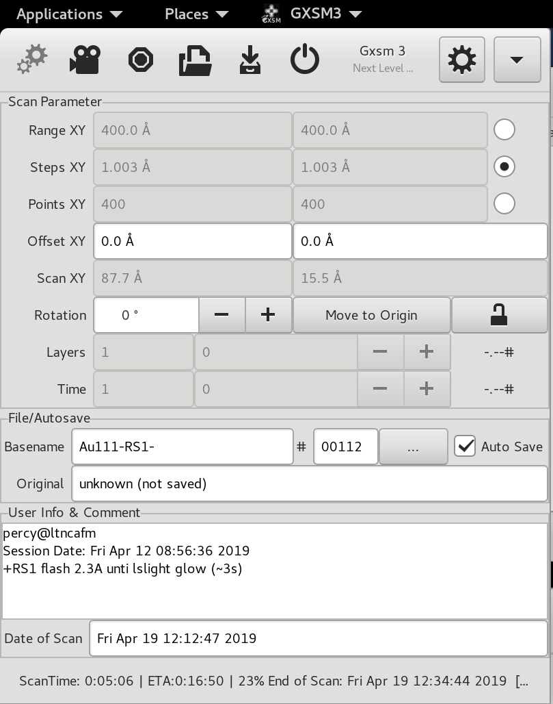

The Main Window {#ch:main}
After startup, the main window appears. The actual user interface provided by the main window depends on the configuration (compare Fig. [fig:screenshot:gxsm3-main]{reference-type="ref" reference="fig:screenshot:gxsm3-main"}. GXSM can be configured for use with SPM techniques, which is the default.

The main window provides two different functions: Firstly, it has a menu
bar with pull-down menus. These menus provide the user with the usual
File and Help menus which can be found in practically every
mouse-driven software piece. Some of these pull-down menus interact
with (Math) or start-up (Windows) other windows. Secondly, the
main menu contains a large number of control fields which can be used,
e.g., to control an instrument, or just display certain parameters.
These control fields are described in the following two sections.
Understanding the main window's entries: SPM mode {#sec:main:spmentries}
This section explains the contents of the main window (see Fig. [fig:screenshot:gxsm3-main]{reference-type="ref" reference="fig:screenshot:gxsm3-main"}) for Gxsm running in SPM mode. The main window contains from top to bottom the menubar, a taskbar, the scan parameter, view mode, file, and info/comment sections, and a status and progress bar. The scan parameter and info sections of the main window are used both for entering parameters during data taking and displaying them after loading data.
Scan parameters
Each scan or image is characterized by its size and resolution. The size, or Range XY, gives the scale of the image like the scale of a city map and denotes the height and width of the scanned area. The resolution is determined by either the distance between the single scan points/pixels given by Steps XY or the number of points in X and Y direction given by Points XY. Given two of these parameters, the third one can be computed. The check box Calculate determines, which of them is calculated by GXSM. For instance, if Steps is checked, a change of Range XY results automagically in a new value for Steps XY.
The parameter Offset XY determines the distance of the zeropoint of the image coordinates from the center of the physical scanrange. The actual location of the zeropoint within the scan depends on the source of the data. If the data was acquired using GXSM, the zeropoint is the middle of the topmost line. Using Rotation, the imaged area can be rotated. Both inputs using numeric values and the scrollbar are possible.
GXSM can be used to do spatially resolved spectroscopy ("probing") and time dependent measurements ("movies"). Channels containing probing (or time dependent) data are essentially three-dimensional (3D) datasets. In these 3D datasets the X and Y coordinates correspond to the 2D position like in conventional SPM images. The third dimension can be the voltage V or the time t. GXSM displays only one slice corresponding to one V or one t value at a time. Layers denotes the number of points in the V direction, Time in the temporal direction.
VRange Z and VOffset Z are used for the visualization of the scan data. They do not influence the data itself. See also Sec. [bright-contrast]{reference-type="ref" reference="bright-contrast"}.
File and user information
For the users convenience, the filenames for saving new data are automatically generated. The filename is set together using the Basename is the login name of the GXSM user. The scheme used for generating the filename from the scan number can be configured in the Preferences on the tab User. The scan number is followed by "-M-" if the image contains additional information besides the bare 2D image like events and point probes. The next part of the file name indicates the scan direction: Xp or Xm. Finally, the channel name is attached to the file name. The channel name can be configured on the tab DataAq of the Preferences window. Auto Save is checked, each new scan is automatically saved after the scan is finished.
During image analysis it is often convenient to save the "enhanced" images using an easy to memorize name. Nethertheless, it is often necessary to get back to the original data. For this purpose, Originalname shows the name of the original data file. This feature works only for files saved using GXSM's NetCDF format.
The Comment field allows adding comments to scan data, e.g. the name of the sample. Again, saving this information is supported best for the NetCDF file format.
Hint: If your dataformat is not natively supported by GXSM, but can be
exported to ASCII, consider using ncdump and ncgen to create a
nc-file from your data. Running ncdump on any GXSM-nc-file shows you
which parameters are necessary, insert your data in the ASCII output and
revert the ASCII-file back to NetCDF using ncgen.
Drag and Drop {#sec:main:DnD}
Gxsm accepts all loadable files via 'drag and drop', e.g. from the Nautilus and understands VFS file paths. Even dragging URL's pointing to loadable files on the web is possible.
If you drop a file on a channel-window, it is loaded into that channel. To create a new window with a new channel bound to it, drop the file above the main window.
Keyboard-Accelerators {#sec:main:accel}
Most common used action on a scan-view are assigned to keyboard accelerators, this is indicated by the Key-Symbol on the right side of a menu entry. (See pull down/pop-up menus on scan 2D view). F2 for example triggers a auto-display (auto scale to min-max of all data or via active rectangle area selection).